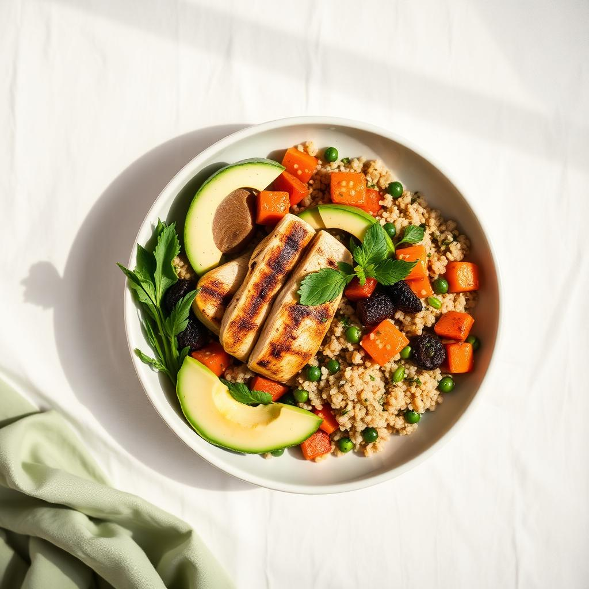
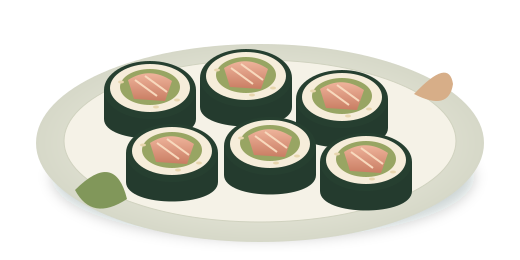

Your kitchen.
Connected.
From the first invoice to the final serving. Follow one restaurant’s data through a complete service.
Follow the journey ↓SCROLL TO FOLLOW THE DATAFrom the first invoice to the final serving. Follow one restaurant’s data through a complete service.
Follow the journey ↓SCROLL TO FOLLOW THE DATAA photo becomes a document Solace can read. Supplier, date, purchased quantities and prices come into focus.
KEEP SCROLLING · THE DATA STAYS CONNECTEDRaw purchase values become structured fields. Pack prices turn into usable unit costs.
KEEP SCROLLING · THE DATA STAYS CONNECTEDReview a suggested match, or create a new ingredient. Different supplier names can point to the same kitchen ingredient.
KEEP SCROLLING · THE DATA STAYS CONNECTED
Extracted values are reviewed before approval.
Supplier aliases connect to your internal ingredients. Review once, recognize on later invoices.
Recipes reference shared ingredient records. Costs, measured units and nutrition completeness stay connected.
SCROLL TO FOLLOW THE DATAIngredients combine into a measured batch. Its actual yield determines the cost of every scoop.
KEEP SCROLLING · THE DATA STAYS CONNECTEDDirect ingredients and reusable prep recipes come together. Watch each measured quantity add to the dish.
KEEP SCROLLING · THE DATA STAYS CONNECTEDSalmon goes directly into menu recipes. Spicy Mayo brings its own ingredient quantities and measured yield with it.
KEEP SCROLLING · THE DATA STAYS CONNECTED20 lb
1 case · 8,000 g net
50 lb dry
Purchased Oct 28 · Restaurant Supply Co. · Prices reference shared records.
500 g + 80 g + 20 g → measured 600 g yield. A kitchen-measured scoop of 42 g costs $0.28. Nutrition remains pending until label review.

Rice: 1,000 g dry → 3,000 g measured cooked yield. A 180 g cooked portion uses 60 g dry-rice cost.
Salmon connects to all four dishes. Spicy Mayo is reused in the roll, burrito and poke; nigiri has no mayo.
The intended workflow: add an import address to scheduled POS reports. Email carries the attachment into Solace.
SCROLL TO FOLLOW THE DATAReport rows connect to the recipes behind each sale. An ambiguous name stays in review until someone resolves it.
KEEP SCROLLING · THE DATA STAYS CONNECTEDSold quantities × recipe costs. One transparent calculation, from individual dishes to the whole service.
KEEP SCROLLING · THE DATA STAYS CONNECTEDExplore a current-cost scenario. Every affected recipe recalculates from its own salmon quantity.
KEEP SCROLLING · THE DATA STAYS CONNECTEDSales reports from your POS.
Email delivery, rather than a direct API connection.
POS names identify report sources, not partnerships. Scheduled email intake is a product preview.
Unmatched rows are excluded from this sample’s totals. The four matched rows below form the calculation.
Spicy Salmon Roll · calculations retain unrounded recipe costs.
Recipe cost × quantity sold estimates theoretical usage. Actual inventory usage, waste, labor and overhead are not included.
Scenario comparison against $8.99/lb. Historical baseline stays fixed; this models the same sales at today’s ingredient price.
Photograph the actual product label. Review the serving basis and printed values before adding them to the ingredient.
SCROLL TO FOLLOW THE DATANutrition follows the same direct and prep-recipe paths as cost. Quantities and batch yields do the calculation.
KEEP SCROLLING · THE DATA STAYS CONNECTEDThe recipe becomes a guest-facing dish. Purchase costs and supplier details stay in the kitchen.
KEEP SCROLLING · THE DATA STAYS CONNECTEDFrom what comes into your kitchen to what your guests see on the menu. One shared recipe system.
KEEP SCROLLING · THE DATA STAYS CONNECTEDServing size 15 g
15 g serving → divide by 15 → values per gram.
25 g mayo = 167 kcalFictional product-label example, not a verified Kewpie specification. Invoice prices never supply nutrition.
One serving. Label calories are retained as printed; macro rounding is not used to invent calorie values. All sample ingredient labels are now present.
Atlantic salmon, avocado, seasoned rice and our house spicy mayo.
Guest view contains serving nutrition and menu pricing. Supplier details and internal food costs are omitted.
Open a dish. Explore its serving nutrition.
Every value comes from the shared demo ingredients.
All suppliers, purchases, measurements, nutrition labels and sales are illustrative. Document extraction, ingredient and recipe management, and guest-menu structures are represented in the inspected app source; production availability has not been verified here. Scheduled POS email intake is a planned workflow. This site is an interactive demonstration and submits no data.
Food cost is theoretical recipe usage at the stated price scenario. Contribution excludes labor and overhead. Nutrition is calculated from sample label serving bases, not inferred from invoice prices. Photography represents sample dishes.
FROM THE FIRST INVOICE TO THE FINAL SERVING